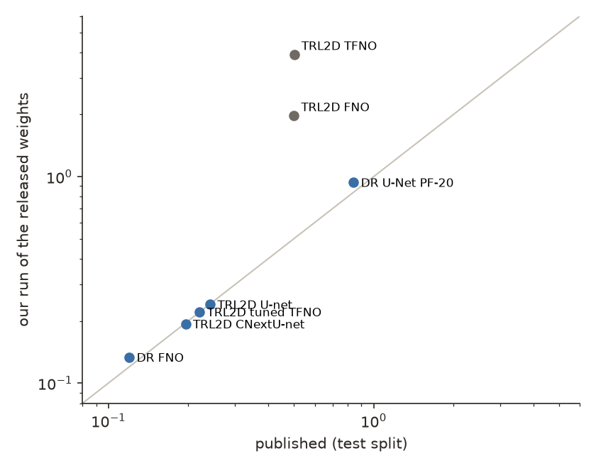
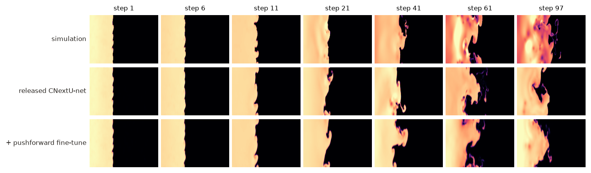
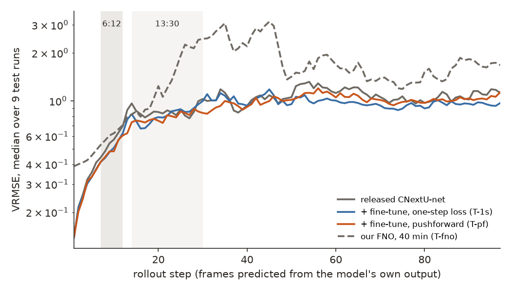
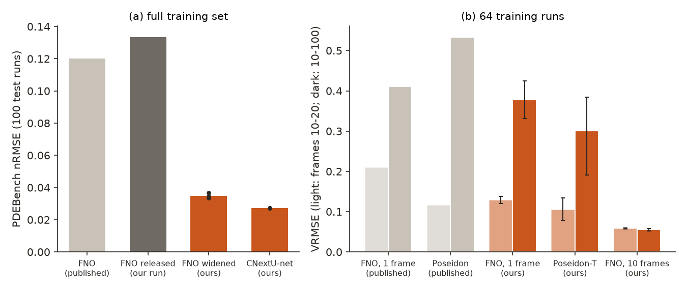

← Research·Experiments·
Learned physics simulators, re-run: seven of nine baselines reproduce, PDEBench’s is easy to beat, The Well’s best is not
We re-ran nine released neural PDE surrogates with their authors’ code, then changed one thing at a time on a single A10G. On PDEBench’s diffusion-reaction data a 25-minute CNextU-net cut the error of PDEBench’s released FNO by 5x (nRMSE 0.134 to 0.027). On The Well’s turbulent radiative layer, nothing we trained beat the released CNextU-net one step ahead, but 30 minutes of fine-tuning cut its error 6 to 12 steps into a rollout from 0.57 to 0.48.
Summary: the short answer and the key results
In short
Do published baselines for learned physics simulators reproduce, and can one change at a time beat them?
Mostly yes, and it depends on the benchmark. Seven of nine released checkpoints scored within 12% of their paper when we re-ran them with the official code, for example The Well’s CNextU-net at 0.194 against a published 0.196 one-step VRMSE (error divided by the frame’s own spread). The Well’s released FNO and TFNO weights did not reproduce (1.98 and 3.91 against 0.50). On PDEBench’s diffusion-reaction data, a CNextU-net trained for 25 minutes reached nRMSE 0.027 on all three seeds, against 0.134 for PDEBench’s released FNO. On The Well’s turbulent radiative layer, no model we trained beat the released CNextU-net one step ahead, but fine-tuning it for 30 minutes cut its rollout error at steps 6 to 12 from 0.574 to 0.477 [0.426, 0.517]. A fine-tune with the same compute and no rollout training did nearly as well (0.516).
Key results
| What we tested | Result (test split, 3 seeds, 95% intervals) | Compared with |
|---|---|---|
| Do released checkpoints reproduce? | 7 of 9 within 12%. CNextU-net 0.1936, U-net 0.2405, tuned TFNO 0.2214, PDEBench FNO nRMSE 0.1335 | Published 0.1956, 0.2418, 0.2210, 0.12. The Well’s FNO and TFNO weights: 1.98 and 3.91 against 0.50 |
| DR: does a different architecture beat PDEBench’s FNO? | Yes, 4.9x. CNextU-net nRMSE 0.0271 (seeds 0.0271-0.0272); widened FNO 0.0349 | Released FNO 0.1335 in our run, 0.12 published. Beats both, pre-registered |
| TRL2D: does anything beat The Well’s best one-step score? | No. Fine-tuned CNextU-net 0.1936 [0.165, 0.224]; paired difference [-0.0014, +0.0015] | Released 0.1936 (ours), 0.1956 (published) |
| TRL2D: does fine-tuning shorten rollout error? | Yes, at 6-12 steps. Pushforward 0.477 [0.426, 0.517], paired [-0.130, -0.065]; beats the published 0.54 | Same-compute one-step fine-tune 0.516 [0.468, 0.569]: most of the gain is extra training, not pushforward |
| TRL2D: is The Well’s FNO a weak baseline? | Yes. Our 40-minute FNO 0.319 [0.301, 0.338] | Published 0.5001 (12 h on an H100) |
| DR with 64 training runs: does pretraining (Poseidon) beat a scratch FNO? | Context matters more. Poseidon-T, 1 input frame: 0.105 [0.079, 0.134] / 0.300 [0.190, 0.384]. FNO, 1 frame: 0.129 / 0.378. FNO, 10 frames: 0.058 / 0.055 | Beyond Local Accuracy: FNO 0.2104/0.4113, Poseidon 0.1161/0.5338 (short/full) |
01Introduction
A weather forecast for next week is built from forecasts for the next hour, each fed back in as the starting point for the one after. A learned physics model, often called a neural surrogate or an "AI physics engine", works the same way: it is trained to predict the next frame of a simulation from the last few, and then run on its own output. A model that is 5% off after one step can be 100% off after fifty. This note re-runs published surrogates on two public datasets and asks how far their numbers hold, both one step ahead and fifty steps ahead.
What is known. The Well (Ohana et al., 2024) is a 15 TB collection of physics simulations with released baselines (FNO, TFNO, U-net, CNextU-net) trained for 12 hours each on one H100. PDEBench (Takamoto et al., 2022) is an older benchmark with released FNO and U-Net models. Pincha et al. (2026) argue The Well's FNO and TFNO baselines were barely tuned and beat them on 15 of 17 datasets with a tuned TFNO. Park et al. (2026), "Beyond Local Accuracy", show that foundation models such as Poseidon win on short horizons but their error grows faster over a long rollout, and measure that growth as the error amplification G. Flowers (2026) reports the current best one-step score on The Well's radiative-layer data.
What is missing. Each paper reports its own number against the others' published numbers. Nobody we found re-ran the released weights with the released code, so a reader cannot tell a real gain from a gap in evaluation, and few report the long rollout beside the one-step score.
Do the published baselines for learned PDE surrogates reproduce from their released weights, and can one change at a time, on a single small GPU, beat them one step ahead and over a long rollout?
What this note does. It re-evaluates nine released checkpoints with the official code on the official test splits, then trains eight configurations under a rule for "beats" written down before the final runs. Its contributions:
- A reproduction table: seven of nine released checkpoints land within 12% of their paper; The Well's released FNO and TFNO weights do not, and the tuned-TFNO checkpoint was picked on the test set.
- Two pre-registered wins and one hold-out: PDEBench’s FNO is beaten 5x by an architecture swap and 3.8x by widening it; The Well’s FNO is beaten in 40 minutes; The Well’s best one-step score is not beaten, only its short rollout.
- Long-rollout numbers beside every one-step number, with the error amplification G, and a finding about low-data comparisons: at 64 training runs, how many input frames a model sees changes its error more than pretraining does.
- The code: every model and metric goes through the datasets' own evaluation code, on Modal, for about $27.
02Setup
2.1 Two datasets
- TRL2D, The Well's
turbulent_: a layer of hot gas sliding over cold gas, mixing and cooling by radiation, simulated with Athena++. 90 runs of 101 frames at 128 × 384, four fields (density, pressure, two velocity components); 72 runs to train, 9 to validate, 9 to test, as The Well splits them. It is The Well's smallest dataset (7.9 GB), small enough to hold in GPU memory.radiative_ layer_ 2D - DR, PDEBench's 2D diffusion-reaction: two chemicals that spread and react (the FitzHugh-Nagumo equations), 1,000 runs of 101 frames at 128 × 128. PDEBench tests on the last 100 runs; we train on the first 850 and validate on the next 50. "Beyond Local Accuracy" uses the same data, which gives a second set of published numbers.
2.2 What is measured
VRMSE (variance-scaled root mean squared error) is the error of a predicted frame divided by how much the true frame varies: 0 is perfect, and 1 is as bad as predicting the frame's average everywhere. A rollout is the model run on its own predictions: given the first 4 frames (TRL2D) or 10 frames (DR), it predicts the rest one frame at a time without ever seeing the simulation again.
- One-step VRMSE: the model always gets true frames as input; averaged over every test window and field (TRL2D: 864 windows). This is The Well's headline number.
- Rollout windows: mean VRMSE over rollout steps 6-12 and 13-30 (The Well's Table 3) and 1-20 (Flowers).
- Short and full horizon (Beyond Local Accuracy): for each test run, VRMSE averaged over the short horizon (the first 11 predicted frames) or the full rollout, then the median over test runs. G = full / short: how much the error grows when the model runs on its own output.
- nRMSE: PDEBench's own normalised error, from its own
metric_func, rollout from frame 10 to frame 100.
2.3 The changes tried
Each trained model changes one thing from a published baseline:
- Tuning a baseline: The Well's FNO trained by us (TRL2D); PDEBench's FNO widened from 20 to 64 channels and 12 to 20 Fourier modes (DR).
- A modern architecture: The Well's CNextU-net (a U-net built from ConvNeXt blocks) on DR, where PDEBench only published an FNO and a plain U-Net.
- A pretrained model: Poseidon-T, a 21M-parameter transformer pretrained on fluid simulations, fine-tuned on 64 DR runs.
- Rollout-aware training: pushforward (Brandstetter et al., 2022): on half the batches, the model first unrolls 1-4 steps on its own output without gradients, then learns the next step from that imperfect input, so it sees the kind of errors it will make at test time. Applied as a fine-tune to The Well's released CNextU-net, against a control fine-tune with the same compute and the ordinary one-step loss.
03How the study was run
- Data and weights: download TRL2D, DR (checked against PDEBench's md5) and nine released checkpoints into a Modal volume. Check that our training windows equal The Well's own data loader's, value for value (largest difference 0.0).
- Reproduce (9 checkpoints): evaluate each with the official code (The Well's data module, rollout and VRMSE; PDEBench's rollout and nRMSE) on the official test split. When a checkpoint did not reproduce, check its keys and shapes and try four other input conventions (5 more evaluations).
- Explore (18 runs, validation split only, one seed, 4-40 minutes each): which changes help, and at what learning rate and time box.
- Pre-register the eight final configurations, their time boxes, the metrics, the "beats" rule and six predictions, and commit them (PREREGISTRATION.md) before any final run.
- Final runs (24: 8 configurations × seeds 1, 2, 3), each evaluated once on the test split with the weights at the end of its schedule; no checkpoint is picked on validation or test.
- Analyse: 95% bootstrap intervals over test runs and seeds (10,000 resamples); paired differences against our reproduction on the same resampled runs.
| Fixed before the final runs | Changed after reading results |
|---|---|
| The datasets and splits; the metrics; the eight configurations, seeds and time boxes; the "beats" rule; the predictions | During exploration: the learning rates, the time boxes, dropping input noise and pushforward on DR (both hurt the short horizon on validation), adding the one-frame FNO after seeing that context length moved the N = 64 numbers. Nothing after the finals started |
Conditions: one NVIDIA A10G (24 GB) per run on Modal, at most three at a time, bf16 for the U-nets and Poseidon, fp32 for the FNOs; AdamW, 5% warm-up and a cosine schedule to the end of the time box. Pinned code: The Well aac88c0, PDEBench 4ff3e3a, the tuned-TFNO authors' repository ca99193, Poseidon b8fa28f.
What counts as beating a baseline (pre-registered):
- Beats the published number: the upper end of the 95% interval is below the paper's number.
- Beats our reproduction: the paired interval of (ours − the released model in our run) lies wholly below zero.
- Beats the baseline: both. Where no reproduction exists (Beyond Local Accuracy's numbers; The Well's FNO, whose weights do not reproduce), only the first test applies.
04Results
Five findings:
- 4.1 Seven of nine released checkpoints reproduce; The Well’s FNO and TFNO weights do not, and the tuned TFNO was picked on the test set.
- 4.2 On TRL2D, nothing beats The Well’s best one-step score; fine-tuning shortens its rollout error, mostly through extra training.
- 4.3 A 40-minute FNO beats The Well’s published FNO by a third.
- 4.4 On DR, a wider FNO and a CNextU-net cut PDEBench’s FNO error 3.8x and 4.9x.
- 4.5 With 64 training runs, input context matters more than pretraining.
4.1 Seven of nine released checkpoints reproduce; The Well’s FNO and TFNO weights do not
Re-run with the official code on the official test split, seven released checkpoints scored within 12% of their published number; The Well’s FNO and TFNO weights scored 1.98 and 3.91 against a published 0.50. Figure 1 plots each published number against our run.

results/repro_*.json.| Checkpoint | Published | Ours | 95% interval | 6:12 rollout | 13:30 rollout | G |
|---|---|---|---|---|---|---|
| The Well CNextU-net | 0.1956 | 0.1936 | [0.163, 0.225] | 0.574 (pub. 0.54) | 1.019 (1.01) | 2.67 |
| The Well U-net | 0.2418 | 0.2405 | [0.214, 0.270] | 0.736 (0.66) | 1.272 (1.04) | 2.72 |
| Tuned TFNO (2610.33967) | 0.2210 | 0.2214 | [0.196, 0.248] | 0.529 | 0.956 | 2.75 |
| The Well FNO | 0.5001 | 1.977 | [1.50, 2.64] | diverges | diverges | – |
| The Well TFNO | 0.5016 | 3.911 | [2.17, 6.03] | 3.96 | 4.18 | – |
| PDEBench FNO (DR, nRMSE) | 0.12 | 0.1335 | – | VRMSE short 0.260, full 0.140 | 0.54 | |
| PDEBench U-Net PF-20 (DR, nRMSE) | 0.84 | 0.9377 | – | VRMSE short 1.31, full 1.02 | 0.77 | |
Three details matter for anyone comparing against these numbers. First, The Well’s FNO and TFNO checkpoints have the right keys and shapes for the model The Well’s package builds, and the U-nets reproduce through the same pipeline, so the evaluation is not the problem; four other input conventions (raw units, RMS scaling, z-scores with a predicted change) got the FNO no lower than 0.90, and on the validation split it scores 2.14 where its model card says 0.49. Treat The Well’s published FNO and TFNO numbers as unreproducible from the released weights. Second, the tuned-TFNO checkpoint records that it was evaluated on the test split after every epoch and saved at the epoch with the lowest test VRMSE (epoch 246, 0.22096); its training code loads no validation split. Its published 0.2210 is a minimum over epochs on the test set, a small but real optimistic bias. Third, both PDEBench models come out about 11% worse in our run than in the paper, with PDEBench’s own metric function.
4.2 On TRL2D, nothing beats The Well’s best one-step score; fine-tuning shortens its rollout error, mostly through extra training
Fine-tuning the released CNextU-net for 30 minutes left its one-step VRMSE unchanged (0.1936; paired difference [-0.0014, +0.0015]) and cut its error 6 to 12 steps into a rollout from 0.574 to 0.477 [0.426, 0.517] with pushforward, and to 0.516 [0.468, 0.569] with the ordinary one-step loss. Pushforward beats the baseline at 6:12 under the pre-registered rule (below the published 0.54 and the paired interval [-0.130, -0.065] below zero). At 13:30 both fine-tunes beat our reproduction (paired [-0.204, -0.058] and [-0.354, -0.008]); only the one-step control’s interval also clears the published 1.01.

results/hero_frames.json.
results/.The control matters. Compared directly with the one-step fine-tune (exploratory, not pre-registered), pushforward is better only in the 6:12 window, by 0.037 [0.001, 0.085]; over steps 1-20, 13-30 and the full rollout the two cannot be told apart. Most of the rollout gain comes from training the released model longer at a low learning rate, whatever the loss. A possible reason, not tested: the released checkpoint is the one with the best validation score at one step, which need not be the best at rollouts.
Neither fine-tune changes the long run. By step 60 every CNextU-net variant is near VRMSE 1.1 (Figure 3), no better than predicting each frame’s mean, and the error amplification stays near 2.6-2.8 (released 2.67; pushforward 2.76 [2.25, 3.21]). For context, Flowers reports 0.193 one-step and 0.549 over steps 1-20 with 24 hours on an H200; our fine-tunes reach 0.533 over steps 1-20 in 30 minutes on an A10G, starting from The Well’s weights.
4.3 A 40-minute FNO beats The Well’s published FNO by a third
The Well’s FNO architecture, trained by us for 40 minutes on an A10G with a learning rate of 10−3, scored 0.319 [0.301, 0.338] one step ahead on the TRL2D test split, against a published 0.5001 from 12 hours on an H100. It also beats the published rollout windows (6:12 0.606 against 1.79; 13:30 1.76 [1.15, 2.48] against 3.54). Only the published-number test applies, since the released weights do not reproduce. This supports Pincha et al.’s point that The Well’s FNO numbers are not architectural benchmarks; their 12-hour tuned TFNO still does better (0.221), and our FNO’s error grows fastest of any model here (G 3.32).
4.4 On DR, a wider FNO and a CNextU-net cut PDEBench’s FNO error 3.8x and 4.9x
Trained for 25 minutes on 850 runs, a CNextU-net reached PDEBench nRMSE 0.0271 on the 100 test runs (seeds 0.0272, 0.0271, 0.0271), and PDEBench’s own FNO widened to 64 channels and 20 modes reached 0.0349 (0.0345, 0.0368, 0.0335), against 0.1335 for the released FNO in our run and 0.12 published. Both beat the baseline under the pre-registered rule: every seed is below both numbers, and on VRMSE, which is saved per test run, the paired intervals against the released FNO are far below zero (CNextU-net short [-0.234, -0.230], full [-0.114, -0.108]). Figure 4a shows the gap.
The released FNO is small (20 channels, 12 modes), so the widened FNO is mostly a capacity change; the CNextU-net changes the architecture and reaches a lower error again. Here the error amplification flips the usual story: the released FNO has G = 0.54, less than 1, because its short-horizon error (0.260) is worse than its full-rollout error (0.140); the CNextU-net’s G is 1.05 with both errors near 0.03. G is a ratio, so a model that is bad early can look stable; read it next to the errors it divides.

4.5 With 64 training runs, input context matters more than pretraining
Trained on 64 runs, the widened FNO given 10 input frames reached VRMSE 0.058 [0.058, 0.060] on the short horizon and 0.055 [0.052, 0.058] on the full one; given 1 input frame, the same model reached 0.129 [0.121, 0.137] and 0.378 [0.332, 0.425], close to Beyond Local Accuracy’s scratch FNO (0.2104 and 0.4113). Poseidon-T, pretrained and fine-tuned for 40 minutes with 1 input frame, reached 0.105 [0.079, 0.134] and 0.300 [0.190, 0.384] (Figure 4b).
Under the pre-registered rule, the ten-frame FNO beats the published FNO numbers on both horizons by a wide margin, and the one-frame FNO beats only the short one (its full-horizon interval contains 0.4113). Our Poseidon-T beats the published Poseidon full horizon (0.534) but not its short one (0.116 lies inside our interval); its three seeds vary a lot (nRMSE 0.173, 0.351, 0.299). Held to the same single input frame, Poseidon-T is better than the scratch FNO on both horizons (0.105 against 0.129; 0.300 against 0.378), which is the comparison Beyond Local Accuracy makes. But an FNO that simply sees 10 frames instead of 1 is better than either, by 1.8x on the short horizon and 5.4x on the full one, and it barely amplifies its error (G 0.95 against 2.87). On this dataset, ten frames tell a model how fast the chemicals are reacting, which one frame cannot. A low-data comparison that does not state the input context can mistake that for a benefit of pretraining. In exploration, Poseidon-T trained from scratch with the same recipe reached 1.78 nRMSE on validation against 0.41 pretrained: the pretraining itself does help.
05Compared with prior work
| The Well (2024) | Pincha et al. (2026) | Beyond Local Accuracy (2026) | Flowers (2026) | This note | |
|---|---|---|---|---|---|
| Re-runs others’ released weights | ✗ | ✗ | ✗ | ✗ | ✓ (9 checkpoints) |
| Long-rollout error reported | ✓ (6:12, 13:30) | ✗ | ✓ (short, full, G) | ✓ (1:20) | ✓ (all of these) |
| Checkpoint chosen without the test set | ✓ (hyperparameters on validation) | ✗ (test, per their checkpoint) | not stated | ✓ (validation) | ✓ (end of schedule) |
| Several seeds with intervals | ✗ | ✗ (seed 42) | not stated | not stated | ✓ (3 seeds, bootstrap) |
| Pre-registered comparison | ✗ | ✗ | ✗ | ✗ | ✓ |
| Compute per run | 12 h H100 | 12 h H100 | not stated | 24 h H200 | 15-40 min A10G |
06Implications for AI safety
Learned simulators are starting to stand in for physics solvers in engineering and science, and their headline numbers are one step ahead. Two lessons carry over to evaluating any learned model that acts on its own outputs, an agent included. First, a benchmark number is only as good as the weights and code behind it: two of nine released checkpoints here do not produce their paper’s number, and one published number is a minimum over epochs on the test set. Second, one-step accuracy says little about a long rollout: on TRL2D every CNextU-net we tested, released or fine-tuned, is near VRMSE 1 by step 60, and a fine-tune that left the one-step score unchanged moved the 6-12-step error by 17%. Error amplification is worth reporting, but next to the errors, not on its own.
The recommendation in one sentence: before claiming a learned simulator beats a baseline, re-run the baseline’s released weights with its own code, pick checkpoints without the test set, and report the long rollout next to the one-step score.
07What this does not show
- Nine TRL2D test runs. Intervals over 9 runs are wide (one-step about ±0.03); only large or paired differences are resolved.
- Short time boxes. Our runs had 15-40 minutes on an A10G against 12-24 hours on H100s and H200s for the published ones. "Not beaten" on TRL2D means not beaten at this budget.
- Two small 2D datasets. Nothing here tests 3D data, other physics, or the larger datasets in The Well.
- The TRL2D fine-tunes start from released weights. They inherit The Well’s 12-hour training; they test whether rollout training adds to a trained model, not whether it beats training from scratch with rollout training.
- nRMSE intervals are seed ranges. PDEBench’s metric function returns batch means, so per-run nRMSE was not saved; the paired tests on DR use VRMSE, which was.
- Beyond Local Accuracy’s numbers were read from its tables, not re-run; its training budget and input context per model are not stated, so the N = 64 comparison is against published numbers only.
08Reproduce it
Recompute every number and figure from the shipped results (seconds, no GPU):
experiments/physics-world-models/reproduce.sh --scoresRerun everything on Modal (about 25 A10G-hours; a Modal account and the modal client):
experiments/physics-world-models/reproduce.sh --dry-run # lists every command
experiments/physics-world-models/reproduce.sh09What’s next
- Train a CNextU-net on TRL2D from scratch for several hours with rollout training from the start, the test pushforward was not given here.
- A third dataset from The Well with 3D or multi-physics data, where the released baselines are less tuned.
- Report the number of input frames with every low-data comparison, and re-run foundation models against scratch models with matched context.
- Look inside: which features of the CNextU-net’s hidden state drift first when a rollout goes wrong (a world-model interpretability question).
10Questions and answers
Do The Well’s published baselines reproduce?
The U-net and CNextU-net do: 0.2405 and 0.1936 one-step VRMSE in our run against 0.2418 and 0.1956 published, with The Well’s own code and test split. The released FNO and TFNO weights do not: 1.98 and 3.91 against 0.50.
Can a small GPU beat PDEBench’s FNO on 2D diffusion-reaction?
Yes: a CNextU-net trained for 25 minutes on one A10G reached nRMSE 0.027 against 0.134 for the released FNO (0.12 published), on all three seeds. Widening the FNO itself gives 0.035.
Does pushforward training reduce long-rollout error?
A little, at short range. Fine-tuning The Well’s CNextU-net with pushforward cut its 6-12-step rollout VRMSE from 0.574 to 0.477, but a fine-tune with the same compute and no pushforward reached 0.516, and over longer windows the two were indistinguishable.
What is error amplification G?
G is the full-rollout error divided by the short-horizon error (Park et al., 2026): 1 means the error does not grow as the model runs on its own output. On TRL2D our models sit at 2.6-3.3; on DR it ranges from 0.54 to about 3, and a G below 1 can mean the model is simply bad early.
Does a pretrained PDE foundation model help with little data?
Somewhat, at matched context. With 64 training runs and 1 input frame, a fine-tuned Poseidon-T reached VRMSE 0.105 (short horizon) against 0.129 for a scratch FNO, but a scratch FNO given 10 input frames reached 0.058: on diffusion-reaction, more input context helped more than pretraining.
AAppendix: data
Every number comes from a file in results/; README.md describes every field.
repro_trl_<model>.json,repro_dr_<model>.json: each released checkpoint on the test split, per test window, run, frame and field.run_x_*.json(exploration, validation split) andrun_f_*.json(finals, test split): config, training log and evaluation in the same format.gpu_ledger.jsonl: every GPU job's wall time, from which the cost is priced.summary.json: every number, interval and verdict quoted here.
Techniques
| Design | Reproduce released weights with official code, then one change at a time against them; pre-registered rule and predictions |
|---|---|
| Models | Fourier neural operators (FNO, TFNO), U-nets (classic, ConvNeXt), Poseidon (scOT transformer) |
| Training | Time-boxed AdamW with cosine schedule; pushforward rollout training; fine-tuning from released and pretrained weights |
| Controls | A same-compute one-step fine-tune for pushforward; Poseidon from scratch (exploration); one-frame and ten-frame FNOs |
| Statistics | Bootstrap over test runs and seeds; paired differences against the reproduced baseline |
Tech stack
| Data | The Well (polymathic-ai/, CC BY 4.0); PDEBench 2D diffusion-reaction (DaRUS, CC BY 4.0) |
|---|---|
| Code | the_well 1.2.1, PDEBench, neuraloperator, the tuned-TFNO authors' repository, Poseidon (scOT); PyTorch 2.4 |
| Compute | Modal, NVIDIA A10G; 17.2 GPU-hours, about $27 |
Revision history
- Nov 14, 2026: First published.
How to cite
@misc{lie2026physicsworldmodels,
author = {Albert Lie},
title = {Learned physics simulators, re-run: seven of nine baselines reproduce, PDEBench’s is easy to beat, The Well’s best is not},
year = {2026},
month = nov,
url = {https://albertlieyingadrian.github.io/steerlab/experiments/physics-world-models/report/}
}